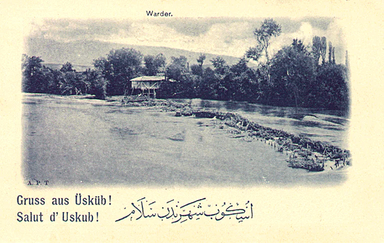
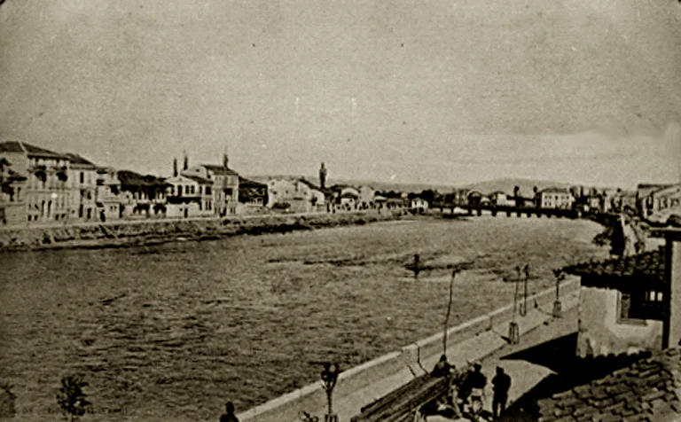
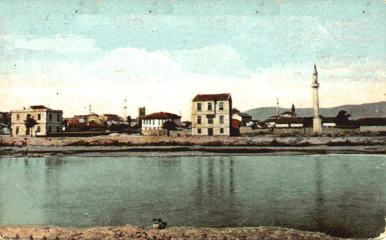

На реци Вардар
- Сценарио
- Димитрије Османли, Симон Дракул
- Камера
- Киро Билбиловски
- Година
- 1964
- Трајање
- 00:16

Кеј „13. новембар“ - 1888. година.

Воденица на горњем току Вардара - крај 19. века.

Иако је ова разгледница веома оштећена, ипак је ушла у ову колекцију јер потиче с краја 19. и почетка 20. века, и на њој се могу приметити неки објекти којих има само на овој разгледници. Десно је Отоманска банка. У првом плану је стари платан на коме је 1689. године обешено мртво тело Карпоша. Изнад њега уздиже се скопска тврђава - Кале. Сасвим лево види се део Каменог моста.

Поглед на два кеја Вардара - почетак 20. века.

Скопље 1902. године - поглед са Каменог моста ка дрвеном мосту. Река Вардар има изграђене кејске зидове. Примећују се стамбени и јавни објекти. На десној страни фотографије примећује се турско позориште, а на левој, на самом почетку, Бурмали џамија. У позадини је објекат банке и старе поште.

Поглед ка малом дрвеном мосту, старом турском позоришту и делу скопске тврђаве - Кале. (почетак 20. века)

Поглед са десне обале Вардара ка скопској тврђави - Кале. (почетак 20. века).

Поглед на леву обалу Вардара (кеј „Димитар Влахов“) - почетак 20. века. На кејском зиду види се ушће реке Сераве.

Дрвени мост, пре изградње Гвозденог моста. У позадини су Камени мост и Бурмали џамија. (крај 19. века)

Почетак 20. века. Отоманска банка, Скопска митрополија и објекти на левој обали Вардара, одмах после Каменог моста. У првом плану је стари платан.

Поглед на леву обалу Вардара ка цркви Св. Мине (са два кубета) и цркви Св. Богородице (у позадини са једним кубетом). - почетак 20. века.

У првом плану су зграда суда и стара школа, а у позадини се виде кубета цркве Св. Мине - почетак 20. века.

Поглед на два кеја Вардара - почетак 20. века.

Лева обала Вардара - кеј „Димитар Влахов“ са Отоманском банком, Митрополијом и два кубета цркве Св. Мине у позадини. (почетак 20. века)

Лева обала Вардара - кеј „Димитар Влахов“, између Каменог и Гвозденог моста, са стамбеним објектима. (почетак 20. века)

Фотографија је снимљена са Каменог моста, око 1910. године. Лево се види старо турско позориште, а изнад њега скопска тврђава - Кале.

Лева обала Вардара са Јеврејском махалом и у позадини скопска тврђава - Кале. (1910. година)

Фотографија је снимљена са Каменог моста, око 1910. године. Лево се види старо турско позориште, а изнад њега скопска тврђава - Кале.

Скопље у поплави 1916. године. Вода је досегла до објеката. Са десне стране види се како је срушен део објекта због поплаве.

Скопље после 1918. године. Два кеја Вардара као уздужне комуникације значајне за развој града. У позадини се види Камени мост са Бурмали џамијом. Види се развијена изградња више објеката на кеју у различитим архитектонским облицима, блиским европској школи.

Скопље пре Балканског рата. Кеј на десној обали Вардара. У позадини се виде Бурмали џамија и Камени мост. У првом плану су руски конзулат и други објекти. Архитектура је под утицајем европске архитектонске школе. Елементи класичног, академског и псеудокласичног обликовног манира.

Поглед на десну обалу Вардара са објектима банке и старе поште, који су се налазили између Каменог моста и малог дрвеног моста - почетак 1920-их.

Поглед ка левој обали Вардара. У првом плану су зграда суда и стара школа, а у позадини се виде кубета цркве Св. Мине. Десно од ње је црква Св. Богородице. - 1920-их.

Поглед на десну обалу Вардара са објектима банке и старе поште, који су се налазили између Каменог моста и малог дрвеног моста - почетак 1920-их.

Десна обала Вардара испред Каменог моста. Слева се виде објекат банке и стара пошта. Десно на разгледници види се мали дрвени мост - око 1920. године.

Поглед на десну обалу Вардара са објектима банке и старе поште, који су се налазили између Каменог моста и малог дрвеног моста - почетак 1920-их.

Део леве обале Вардара - приближна локација данашње зграде Македонске радио-телевизије. Види се минарет Вардар-теће џамије (изграђене почетком 16. века) - почетак 1920-их.

Део леве обале Вардара - приближна локација данашње зграде Македонске радио-телевизије. Види се минарет Вардар-теће џамије (изграђене почетком 16. века) - почетак 1920-их.

Поглед на десну обалу Вардара испред Каменог моста. Средњи кејски простор. Слева се виде објекти банке и старе поште. Десно на разгледници види се мали дрвени мост - око 1920. године.

Скопље - део трга. На левој страни види се део Каменог моста, а десно је простор пре изградње Народне банке. Кеј је направљен као улица за саобраћај. У позадини десно види се мушка гимназија.

Скопље - део трга. На левој страни види се део Каменог моста, а десно је простор пре изградње Народне банке. Кеј је направљен као улица за саобраћај. У позадини десно види се мушка гимназија. - 1930-их

Кеј „Димитар Влахов“ - лева обала Вардара. - почетак 1920-их

Поглед са Каменог моста ка споменику палим борцима и Отоманској банци. - 1920-их.

Панорамска слика Скопља, односно левог кеја Вардара са делом Јеврејске махале, Пајко махалом и Каменим мостом. - 1920-их

Поглед на Скопље са Официрског дома ка јеврејској махали. - 1920-их.

Поглед на десну обалу Вардара са стамбеним објектима. У позадини се види Камени мост и изградња Официрског дома. (око 1925. године)

Скопље, 1930-их. Поглед на два кеја. У првом плану су стара школа и зграда суда, а одмах иза виде се два звоника цркве Св. Мине. У позадини се види Официрски дом, пре изградње Народне банке. Фотографија је снимљена са Гвозденог моста.

Кеј на десној обали Вардара испред Каменог моста. У првом плану је стамбени објекат са дућанима у приземљу и улазима у пасаж „Ароести“, који је изграђен 1920-их и представљао мали тржни центар са занатским и трговачким дућанима. ( У катастрофалном земљотресу 1963. године на овом месту погинуло је много људи. ) У позадини се виде Земљорадничка банка, Официрски дом, Народна банка и Камени мост. (1930-их)

Кеј „13. новембар“ са стамбеним објектима, делом Каменог моста и Официрским домом - 1920-их.

Поглед ка кеју „13. новембар“ на десној обали Вардара, Каменом мосту и Официрском дому - фотографисано око 1927. године.

Део трга испред Каменог моста и обе обале Вардара. Лево у позадини виде се црква Св. Мине са два кубета и мало левље црква Св. Богородице. Кејски простор је уређен, са постављеним електричним осветљењем и зеленилом. (1925-1930. година)

Десна обала Вардара, од малог дрвеног моста ка парку - 1930-их.

Кеј „13. новембар“. Поглед ка Каменом мосту и Официрском дому - крај 1930-их.

Кеј на левој обали Вардара испред Каменог моста са стамбеним објектима у Јеврејској махали. У позадини се види Отоманска банка - око 1930. године.

Поглед са Каменог моста на Вардару ка малом дрвеном мосту и обема обалама реке. Десно је Народно позориште, а лево објекат банке и старе поште. - 1930-их

Поглед на насеље „Буњаковец“. Корито Вардара обезбеђено је земљаним насипима. - 1930-их

Лева и десна обала Вардара. Фотографисано са Каменог моста. Средњи кејски простор са обе стране Вардара. - око 1930. године

Десна обала Вардара. Кеј „13. новембар“.- око 1930. године

Скопље, 1930-их. Поглед на два кеја. Поглед са Гвозденог моста на Вардару на два кеја, изграђена стамбеним и јавним објектима. У првом плану, десно, су стара школа, зграда суда и два звоника цркве Св. Мине. У позадини су Официрски дом и Народна банка.

Поглед ка кеју „13. новембар“ на десној обали Вардара, Каменом мосту и Официрском дому - фотографисано око 1930. године.

Поглед на два кеја Вардара и Гвоздени мост. - 1950-их

Поглед на два кеја Вардара и Бетонски мост. - 1950-их.

Десна обала Вардара после Каменог моста, фотографисана пре катастрофалног земљотреса 26. јула 1963. године. У позадини се виде Официрски дом и Народна банка.

Кеј на десној обали Вардара. Пословно-стамбени простор или „Куле на Вардару“ (пројектант арх. Александар Серафимовски). Фотографија је снимљена 1960-их, пре катастрофалног земљотреса 26. јула 1963. године.

Десна обала Вардара са Каменим мостом, кулама поред Вардара и гранд хотелом „Скопље“, фотографисано непосредно после катастрофалног земљотреса 26. јула 1963. године, а пре регулације Вардара. Регулација је извршена у периоду 1965-1968. године.

Поглед ка десној обали Вардара. Лук у првом плану део је Каменог моста, а фотографисано је 1950-их.

Поглед са леве обале Вардара ка Каменом мосту. У позадини се виде Куле на Вардару. - 1970-их

Поглед на данашњу Централну пошту - Телекомуникациони центар (изграђен 1974-1980. године - пројектант Јанко Констан- тинов) и кеј испред ње.

 Аквадукт4 разгледнице
Аквадукт4 разгледнице Кале30 разгледница
Кале30 разгледница Мостови60 разгледница
Мостови60 разгледница Кеј58 разгледница
Кеј58 разгледница Трг46 разгледница
Трг46 разгледница Објекти66 разгледница
Објекти66 разгледница Хришћански храмови19 разгледница
Хришћански храмови19 разгледница Муслимански објекти33 разгледнице
Муслимански објекти33 разгледнице Официрски дом29 разгледница
Официрски дом29 разгледница Позориште28 разгледница
Позориште28 разгледница Железничка станица13 разгледница
Железничка станица13 разгледница Школе36 разгледница
Школе36 разгледница Паркови12 разгледница
Паркови12 разгледница Пијаце18 разгледница
Пијаце18 разгледница Улице38 разгледница
Улице38 разгледница Панорама I60 разгледница
Панорама I60 разгледница Панорама II30 разгледница
Панорама II30 разгледница Колажи55 разгледница
Колажи55 разгледница Поплаве9 разгледница
Поплаве9 разгледница Земљотрес27 разгледница
Земљотрес27 разгледница Скопље 200026 разгледница
Скопље 200026 разгледница